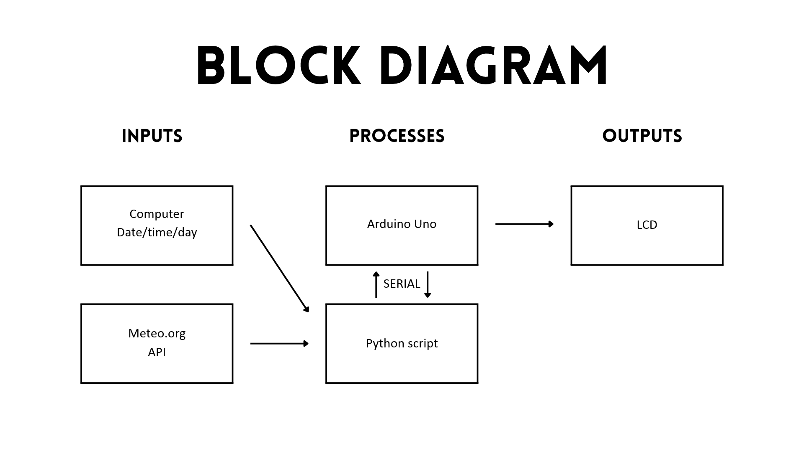
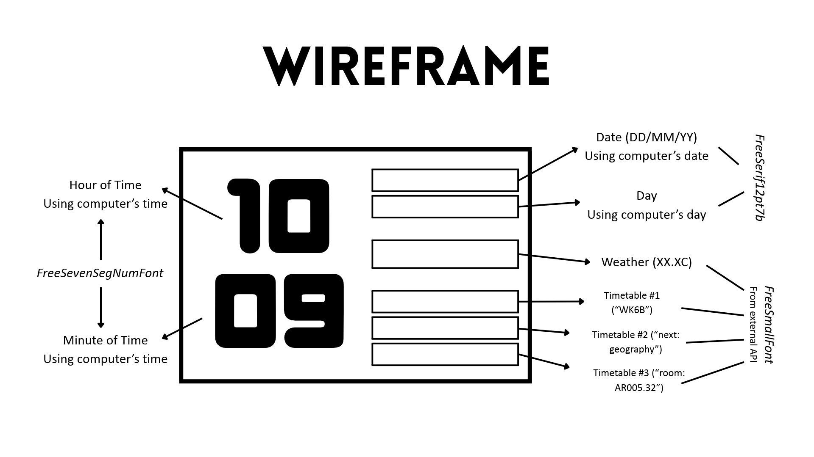
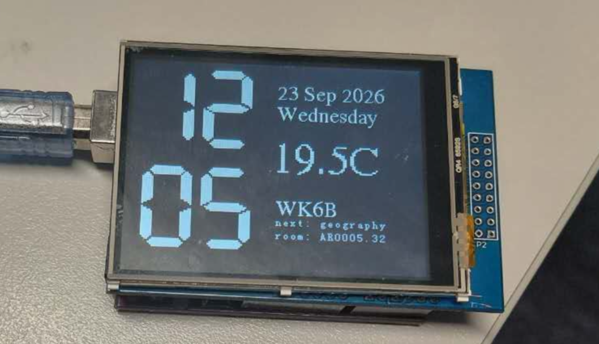

This Arduino information display project really tested my limits and abilities in computing technology. By learning new programming skills and languages like Python, I was able to expand my knowledge and build a deeper understanding of how technology can be used to create practical items.
However, multiple problems arose when programming this project. First, I struggled with wireframing my project’s layout and drew multiple different designs to play with formatting and different complications. As shown below, I decided to choose a design that showed the time stacked on top of each other, using a unique and creative way to challenge myself. Beside the time, I had the date and the day, which I had successfully displayed using the computer’s date and Python script. Below the calendar data was the temperature, which was particularly difficult, and my timetable, which I hadn’t been able to complete.
Another challenge was how my time was displayed, which I had planned to have the hours on top of the minutes, but this idea proved slightly more difficult than I anticipated after taking in account more details. I learned that humans needed to write very specific instructions, such as telling the Arduino exactly which comma to read after, for it to actually work. After some struggle but help from teachers and peers, I was able to show the hours and minutes stacLastly, making the clock work was very difficult, as I had to quickly learn new concepts to understand how to get information from an external API (Application Programming Interface). By working with peers and using information given by teachers, I was able to debug the weather and allow it to show where and how I wanted it to. The main problem was that the screen was showing nothing but “Waiting for PC…”, but after double checking my code on both the Arduino IDE and Visual Studio Code, I was able to find my missing lines of code. ked on top of each other.
Ultimately, this project was a challenging but rewarding experience, helping me improve my coding skills in a practical way.
Word Count: 347


